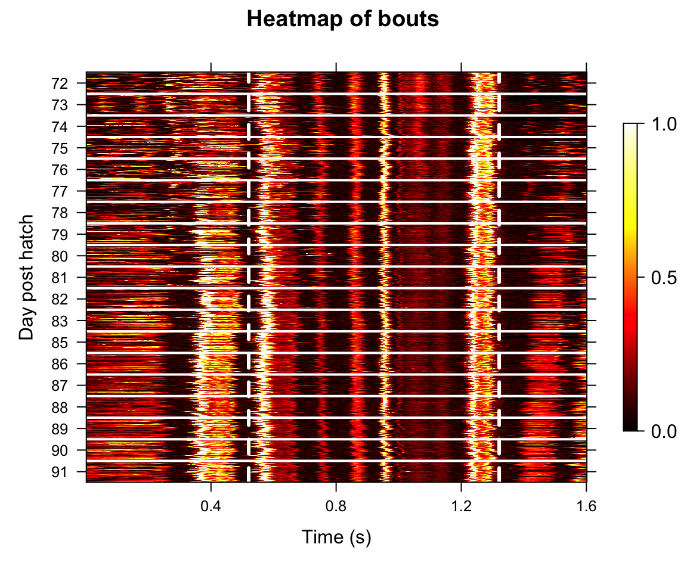
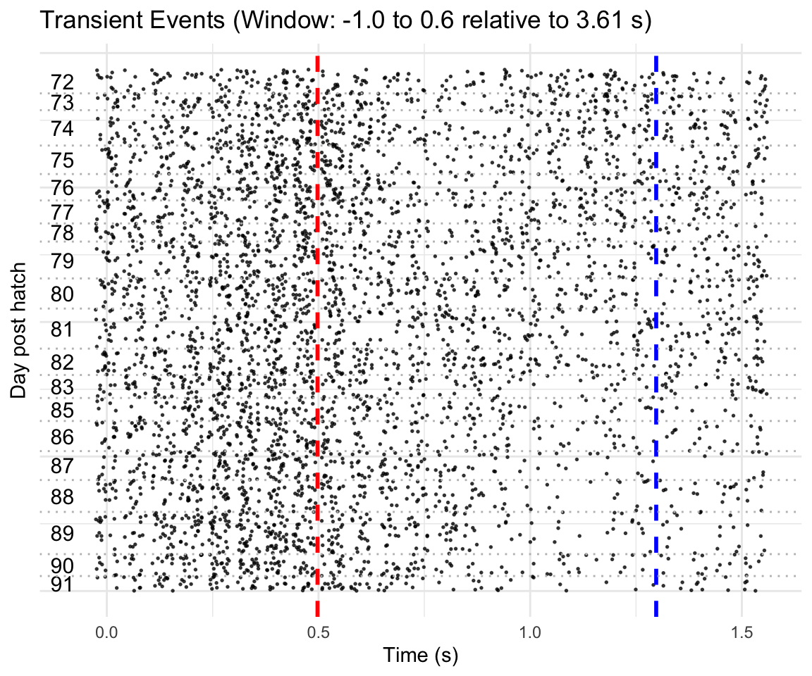
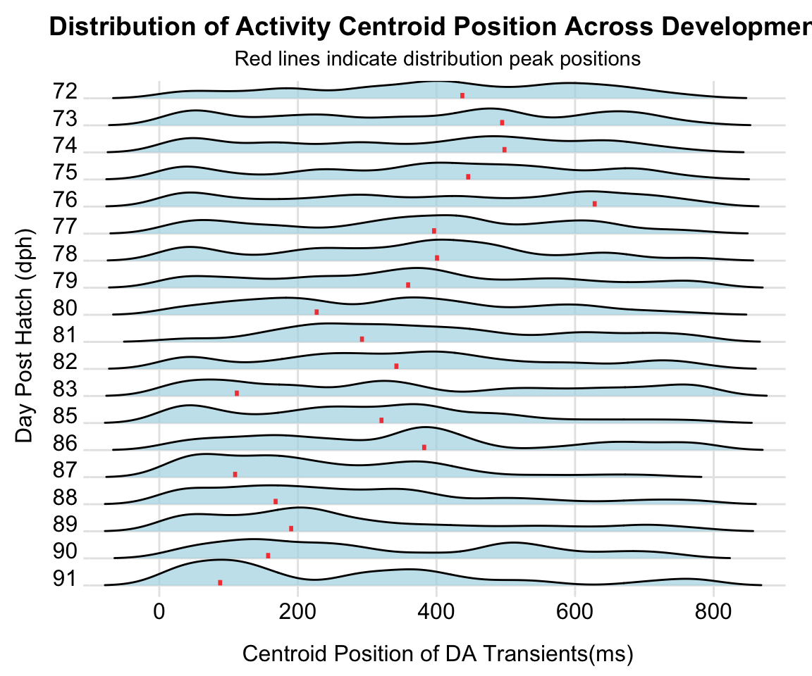
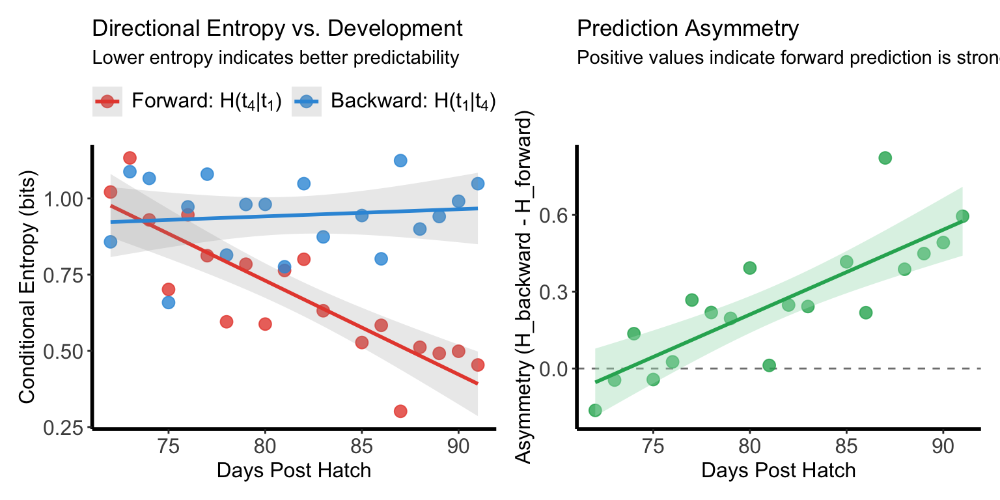
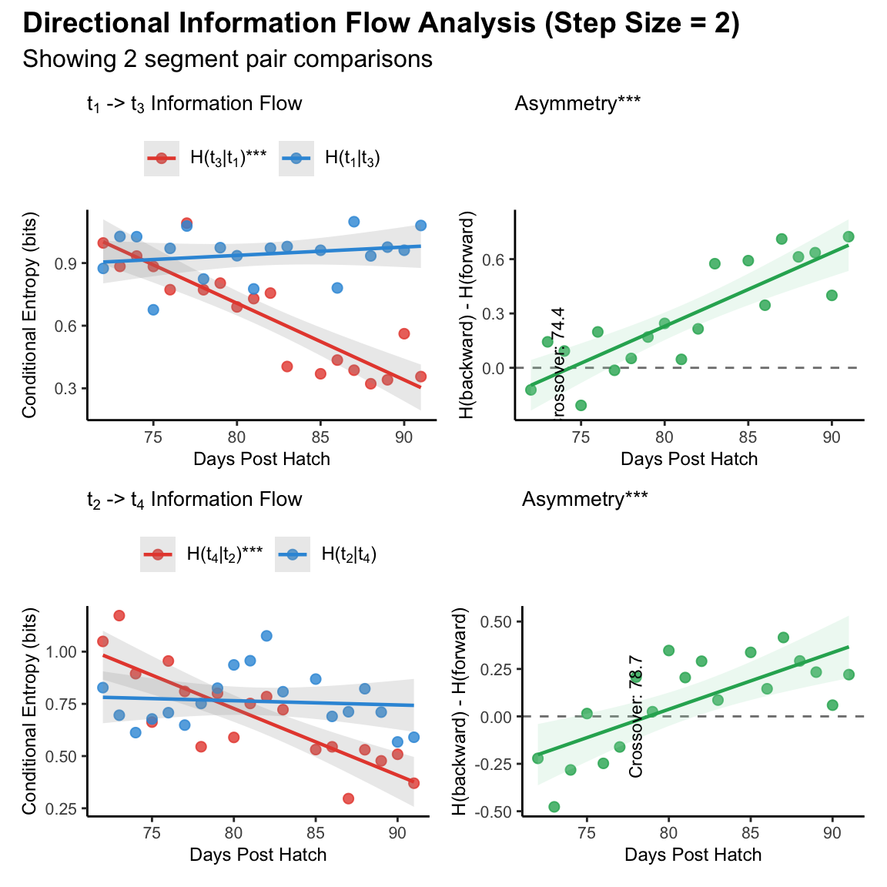

Individual Analysis
2025-07-15
Overview
This tutorial demonstrates individual-level analysis of
processed fiber photometry dopamine data as well as song production from
juvenile songbirds. The analysis examines dopamine transient patterns,
peak amplitudes, and their relationship to vocal behavior development
using the VNS and ASAP packages.
Install Required Packages
Load Processed Data
Load the npm object created from the data processing pipeline.
Visualize Song Development
Figure A
Heatmap showing aligned amplitude envelopes of song recordings from an example bird during development (72-91 dph). Each row represents one epoch (50 epochs per dph). Dashed lines indicate motif onset and offset.
plot_heatmap(npm, segment_type = "bouts",
balanced =T,
window = c(1, 0.6),
contrast = 6,
reference_lines = c(-0.48, 0.32),
ylabel = "Day post hatch",
verbose = FALSE)
Temporal Shift of Dopamine
Figure B
Raster plot showing dopamine transients in individual epochs of the example bird. Red and blue vertical lines indicate motif onset and offset, respectively. Horizontal dashed lines delineate boundaries between days.
plot_transient_raster(npm,
method = "epoch", window = c(-1, 0.6),
region = "reg0",
ref_line = c(-0.48,0.32),
point_size = 0.3,
jitter_height = 0.5,
ref_color = c("red" , "blue"),
ylab = "Day post hatch",
relative_time_axis = F)
Figure C
Density ridge plots showing the distribution of centroid positions of dopamine transients for each dph of the example bird. Red bars indicate distribution peaks. Labels t₁-t₄ denote 200-ms segments spanning the motif window.
segment_counts <- create_segment_table(npm,
region ="reg0",
window = c(-0.4, 0.4),
n_segments= 12)
transient_shift <- analyze_timing_shift(segment_counts,
method = "centroid",
segment_duration_ms = 67,
bandwidth = 40,
highlight_position ="mode",
xlab = "Centroid Position of DA Transients(ms)")
Amplitude Shift of Dopamine
Figure L-M
Representative example showing classic TD learning amplitude shift pattern between early and late motif segments
(left) Peak amplitudes for early (t₁, red) and late (t₄, blue) time windows across development. Early amplitude increased significantly while late amplitude decreased significantly.
(right) Early/late amplitude ratio increased significantly across development.
segment_tab <- create_segment_table(npm,
region = "reg0",
method = "epoch",
data_type = "peak_aligned",
window = c(-0.4, 0.4),
n_segments = 12)
amplitude_shift <- analyze_amplitude_shift(segment_tab,
output = "data.frame",
segment_duration_ms = 67,
segments_per_label = 3, # Number of segments at each edge
label_pair = c(1,4) ) # First and last 200ms
Supplemental figure 1A-D
Representative example showing amplitude redistribution across different pairs of motif segment within 6 days’ sliding window
Peak amplitudes for early (t₁, red) and late (t₃, blue) segments across development. Early amplitude increased significantly while late amplitude decreased significantly.
Early/late amplitude ratio (t₁/t₃) increased significantly across development.
Peak amplitudes for early (t₂, red) and late (t₄, blue) segments showing developmental trajectory. Early amplitude showed no significant change while late amplitude decreased significantly.
Early/late amplitude ratio (t₂/t₄) increased significantly across development.
amplitude_redistribution <- analyze_amplitude_redistribution(segment_tab,
output = "list",
segment_duration_ms = 67,
segments_per_label = 3,
step_size = 2)
Information Theory Analysis
Figure Q-R
Representative example showing predictive coding development between early and late motif segments.
(left) Forward conditional entropy H(t₄|t₁) (red) significantly decreased with development, indicating improved predictability of late events given early events. Backward conditional entropy H(t₁|t₄) (blue) showed no significant change.
(right) Prediction asymmetry (H(t₁|t₄) - H(t₄|t₁)) significantly increased across development.
segment_counts <- create_segment_table(npm,
region ="reg0",
window = c(-0.4, 0.4),
n_segments=4)
dev_res <- analyze_directional_cH(segment_counts,
source_seg = 1,
target_seg = 4)
Supplemental figure 2A-D
Representative example showing shift of directional information flow across different pairs of motif segment within 6 days’ sliding window
Conditional entropies for forward (H(t₃|t₁), red) and backward (H(t₁|t₃), blue) prediction across development. Forward entropy decreased significantly indicating improved predictability of t₃ from t₁, while backward entropy showed no significant change.
Prediction asymmetry (H(t₁|t₃) - H(t₃|t₁)) increased significantly across development, with dominance crossover at DPH 74.4.
Conditional entropies for forward (H(t₄|t₂), red) and backward (H(t₂|t₄), blue) prediction showing developmental trajectory. Forward entropy decreased significantly while backward entropy showed no significant change.
Prediction asymmetry (H(t₂|t₄) - H(t₄|t₂)) increased significantly across development, with dominance crossover at DPH 78.7.

Summary
This individual analysis successfully:
- Visualized song and dopamine transient patterns across development
- Quantified timing and amplitude of dopamine transients
- Analyzed temporal and amplitude shift of dopamine activity within song motif
- Modeled developmental trajectories of dopamine activity within song motif
- Generated comprehensive individual-level reports
- Prepared results for population-level
analysis
Session Info
## R version 4.4.1 (2024-06-14)
## Platform: x86_64-pc-linux-gnu
## Running under: Ubuntu 24.04.3 LTS
##
## Matrix products: default
## BLAS: /usr/lib/x86_64-linux-gnu/openblas-pthread/libblas.so.3
## LAPACK: /usr/lib/x86_64-linux-gnu/openblas-pthread/libopenblasp-r0.3.26.so; LAPACK version 3.12.0
##
## locale:
## [1] LC_CTYPE=C.UTF-8 LC_NUMERIC=C LC_TIME=C.UTF-8
## [4] LC_COLLATE=C.UTF-8 LC_MONETARY=C.UTF-8 LC_MESSAGES=C.UTF-8
## [7] LC_PAPER=C.UTF-8 LC_NAME=C LC_ADDRESS=C
## [10] LC_TELEPHONE=C LC_MEASUREMENT=C.UTF-8 LC_IDENTIFICATION=C
##
## time zone: UTC
## tzcode source: system (glibc)
##
## attached base packages:
## [1] stats graphics grDevices utils datasets methods base
##
## loaded via a namespace (and not attached):
## [1] digest_0.6.39 R6_2.6.1 fastmap_1.2.0 xfun_0.54
## [5] cachem_1.1.0 knitr_1.50 htmltools_0.5.9 rmarkdown_2.30
## [9] lifecycle_1.0.4 cli_3.6.5 sass_0.4.10 jquerylib_0.1.4
## [13] compiler_4.4.1 tools_4.4.1 evaluate_1.0.5 bslib_0.9.0
## [17] yaml_2.3.12 rlang_1.1.6 jsonlite_2.0.0